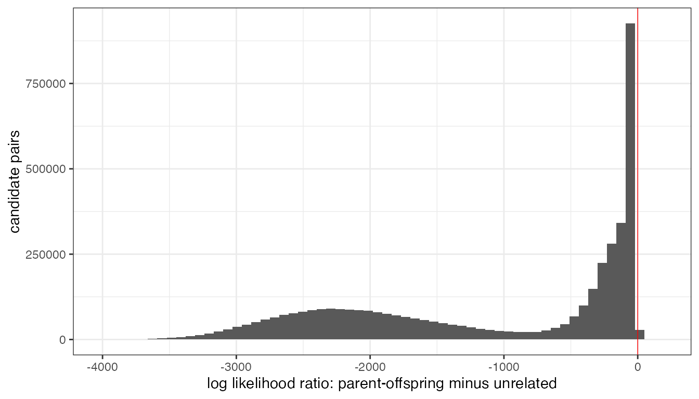
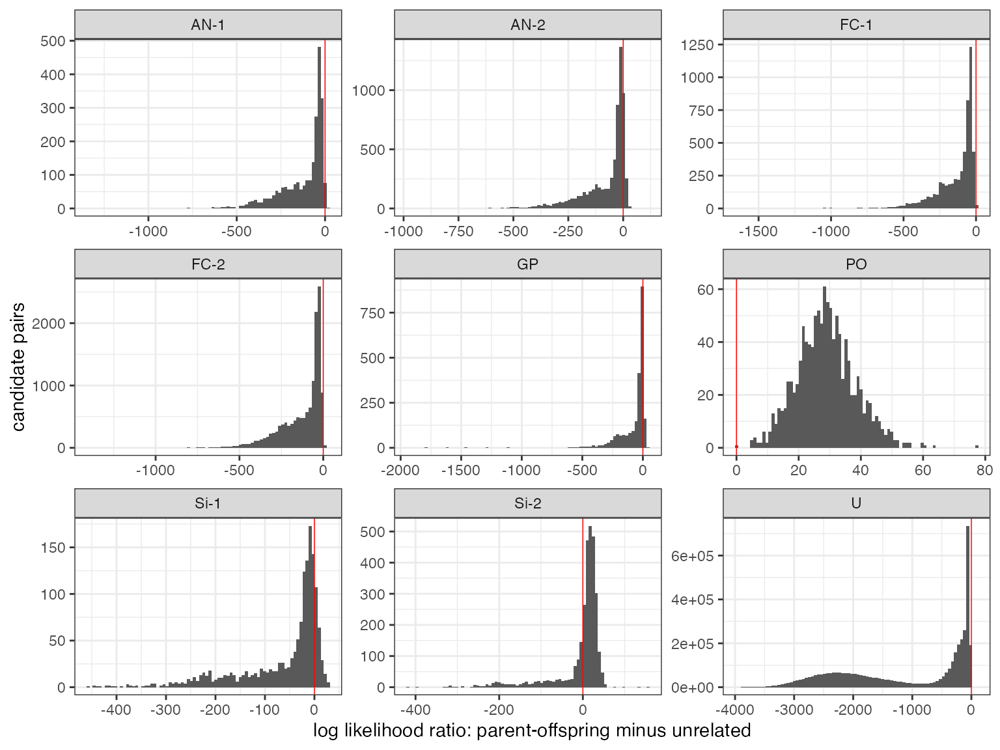
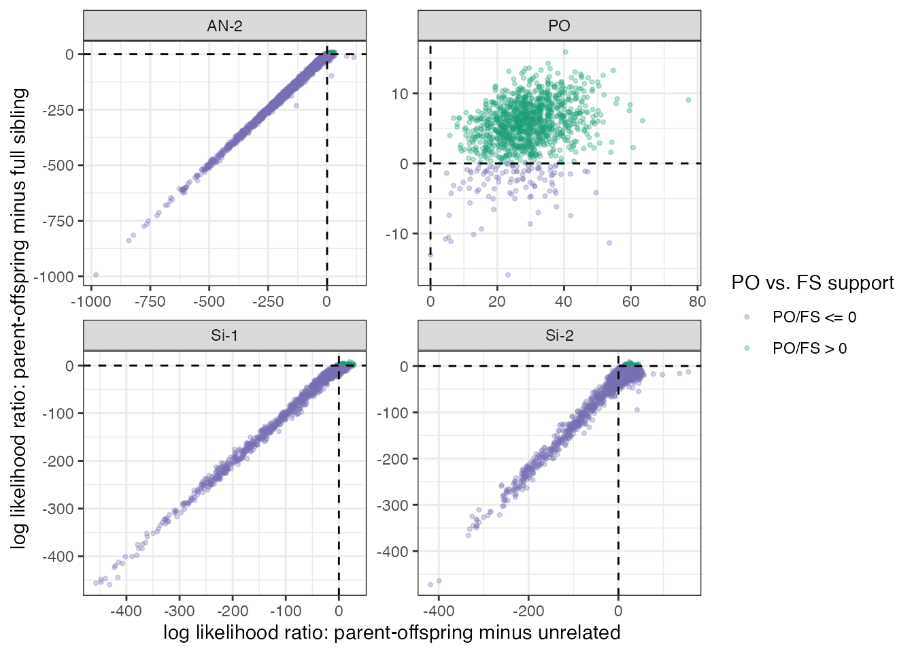

Example run of MixedUpParents
example-run-of-MixedUpParents.Rmd
library(tidyverse)
#> Warning: package 'ggplot2' was built under R version 4.4.3
#> ── Attaching core tidyverse packages ──────────────────────── tidyverse 2.0.0 ──
#> ✔ dplyr 1.1.4 ✔ readr 2.1.5
#> ✔ forcats 1.0.0 ✔ stringr 1.5.1
#> ✔ ggplot2 4.0.2 ✔ tibble 3.2.1
#> ✔ lubridate 1.9.4 ✔ tidyr 1.3.1
#> ✔ purrr 1.0.4
#> ── Conflicts ────────────────────────────────────────── tidyverse_conflicts() ──
#> ✖ dplyr::filter() masks stats::filter()
#> ✖ dplyr::lag() masks stats::lag()
#> ℹ Use the conflicted package (<http://conflicted.r-lib.org/>) to force all conflicts to become errors
library(MixedUpParents)
#>
#> Attaching package: 'MixedUpParents'
#>
#> The following object is masked from 'package:dplyr':
#>
#> id
threads <- 8This vignette walks through a small example analysis with
MixedUpParents. The example data set was generated by the
simulation workflow in MixedUpParents-sims-and-analyses. It
starts from a SLiM simulation of an admixed two-population pedigree,
then applies subsampling, genotyping error, and missingness to produce a
realistic MixedUpParents input object.
Because the object is simulated, it also retains the true pedigree
and relationships. Those simulation-truth objects are useful for
checking the results below, but they are not required for running
MixedUpParents on real data.
T2M_path <- system.file("extdata", "tweaked2mup.rds", package = "MixedUpParents")
input_data <- read_rds(T2M_path)
names(input_data)
#> [1] "tweak_pars" "variable_snps" "spp_diag_snps" "spp_names"
#> [5] "pairwise_relats" "sampled_pedQ" "Rseed"The required genotype inputs are long-format tibbles.
variable_snps contains genotypes at markers that are
variable within ancestry backgrounds, with one row per individual-marker
observation and columns chrom, pos,
indiv, and n. spp_diag_snps has
the same structure, but also includes diag_spp, the
ancestry for which the allele is diagnostic. In both tables,
n is the observed allele dosage, coded as 0, 1, 2, or
NA when the genotype is missing.
input_data$variable_snps %>%
summarise(
rows = n(),
individuals = n_distinct(indiv),
chromosomes = n_distinct(chrom),
markers = n_distinct(paste(chrom, pos)),
missing_genotypes = sum(is.na(n))
)
#> # A tibble: 1 × 5
#> rows individuals chromosomes markers missing_genotypes
#> <int> <int> <int> <int> <int>
#> 1 2225503 3576 29 626 556342
input_data$spp_diag_snps %>%
summarise(
rows = n(),
individuals = n_distinct(indiv),
chromosomes = n_distinct(chrom),
markers = n_distinct(paste(chrom, pos)),
missing_genotypes = sum(is.na(n))
)
#> # A tibble: 1 × 5
#> rows individuals chromosomes markers missing_genotypes
#> <int> <int> <int> <int> <int>
#> 1 4638072 3576 29 1297 1160995The diagnostic markers are labeled by the ancestry for which the alternate allele is diagnostic. In this simulated example there are three diagnostic ancestries, although the simulated admixed pedigree was generated from two focal populations.
input_data$spp_diag_snps %>%
distinct(diag_spp, chrom, pos) %>%
count(diag_spp, name = "diagnostic_markers")
#> # A tibble: 3 × 2
#> diag_spp diagnostic_markers
#> <chr> <int>
#> 1 RBT 813
#> 2 WCT 245
#> 3 YCT 239The remaining elements of input_data document the
simulation or let us check the method after the fact.
sampled_pedQ contains the true pedigree, sampling
generation, population, and true admixture fraction.
pairwise_relats contains the true relationship class for
pairs of sampled individuals. Neither table is needed in an empirical
analysis.
input_data$sampled_pedQ %>%
select(ped_id, ped_p1, ped_p2, ind_pop, ind_time, anc_pop, admix_fract) %>%
slice_head(n = 6)
#> # A tibble: 6 × 7
#> ped_id ped_p1 ped_p2 ind_pop ind_time anc_pop admix_fract
#> <int> <int> <int> <int> <dbl> <dbl> <dbl>
#> 1 30056 27578 27571 1 0 1 0.847
#> 2 30056 27578 27571 1 0 2 0.153
#> 3 30059 27578 27571 1 0 1 0.866
#> 4 30059 27578 27571 1 0 2 0.134
#> 5 32119 28770 28832 2 0 1 0.147
#> 6 32119 28770 28832 2 0 2 0.853For the rest of the vignette we use the shorter name TW,
matching the development scripts that produced this example.
TW <- input_dataInfer ancestry segments
The diagnostic markers are first converted into ancestry copy-number
segments. ancestral_n_segments() finds stretches of
chromosome over which each individual has the same number of copies of
each diagnostic ancestry.
In the notation of the paper, these segments are the empirical version of the ancestry tracts for individual . For a particular segment , the ancestry state is written .
This step, and the extension step that follows, take a little time, but not as much as the calculating the pairwise likelihoods later.
AS <- ancestral_n_segments(
D = TW$spp_diag_snps,
chrom_levels = unique(TW$spp_diag_snps$chrom)
)
AS
#> # A tibble: 352,253 × 8
#> diag_spp indiv chrom chrom_f n n_f start stop
#> <chr> <chr> <chr> <fct> <int> <fct> <int> <int>
#> 1 WCT 30056 omy01 omy01 1 1 5604476 74803921
#> 2 WCT 30056 omy02 omy02 2 2 45656675 85467553
#> 3 WCT 30056 omy03 omy03 2 2 53419215 64080711
#> 4 WCT 30056 omy04 omy04 2 2 17200856 65959628
#> 5 WCT 30056 omy05 omy05 2 2 26549554 71264380
#> 6 WCT 30056 omy06 omy06 1 1 6207101 58538807
#> 7 WCT 30056 omy07 omy07 1 1 17341546 58214623
#> 8 WCT 30056 omy08 omy08 2 2 14525752 69379276
#> 9 WCT 30056 omy09 omy09 2 2 27468641 68137677
#> 10 WCT 30056 omy10 omy10 2 2 26820894 50560803
#> # ℹ 352,243 more rowsThe next step combines the ancestry-specific copy-number segments
into full ancestry states. For a diploid individual with three possible
ancestries, the possible states include values such as
A2B0C0, A1B1C0, and A0B2C0.
These labels correspond to the paper’s
notation for
.
For example, A1B1C0 means that, in that segment, the
individual carries one copy of ancestry A, one copy of
ancestry B, and no copies of ancestry C.
Here the biological labels are ordered as WCT,
RBT, and YCT. That ordering defines the
internal labels A, B, and C.
species_levels <- c(TW$spp_names, "YCT")
E <- extend_ancestral_segments_using_bedtools(
AS,
species_levels = species_levels
)
#> Extending ancestral segments using bedtools in temp directory: /var/folders/ln/5brnn1wx0vj58fhlbbdjm8h40000gp/T//Rtmp9KPVId/file70d69fec3c2
E
#> # A tibble: 116,798 × 5
#> indiv chrom_f copy_num start stop
#> <chr> <fct> <chr> <dbl> <dbl>
#> 1 23939 omy01 A2B0C0 5604475 76705842
#> 2 23939 omy02 A2B0C0 14627479 85467554
#> 3 23939 omy03 A2B0C0 16863659 70168237
#> 4 23939 omy04 A2B0C0 17200854 75324433
#> 5 23939 omy05 A2B0C0 26549553 71264381
#> 6 23939 omy06 A2B0C0 869438 58538808
#> 7 23939 omy07 A1B1C0 16963823 58933104
#> 8 23939 omy08 A1B1C0 11401961 66452476
#> 9 23939 omy09 A2B0C0 32804922 68137678
#> 10 23939 omy10 A2B0C0 10179164 56110002
#> # ℹ 116,788 more rowsThus, the object E is the main bridge between the
observed diagnostic marker data and the ancestry-tract notation in the
paper. Each row gives one segment
for one individual, with its chromosome, start and stop positions, and
copy-number state
.
These extended segments are useful diagnostic objects in their own
right. The first plot summarizes the fraction of each individual’s
genome assigned to each full ancestry state. The black line shows the
admixture fraction for ancestry A, which is
WCT in this example.

The second plot shows the same ancestry states laid out along the genome. This is often a good way to spot unusual individuals or regions where diagnostic markers are sparse.
ancestry_barplot(E, plot_type = "segments")
Prepare genotype probability inputs
pairwise_genotype_probs() uses both diagnostic and
variable markers. Before we can call it, prepare_for_gpp()
estimates allele frequencies in each ancestry background, estimates
individual admixture fractions from the extended ancestry segments, and
builds integer-indexed data structures for the faster C++ code.
In the paper’s notation, the diagnostic and variable markers in segment are the sets and . The corresponding allele-frequency matrices are and , and the estimated admixture fractions for an individual are .
One detail is important: after the extended ancestry segments have
been encoded as A, B, and C, the
diagnostic marker labels must use those same internal labels. The
conversion below preserves the same ancestry ordering used above.
new_diag <- TW$spp_diag_snps %>%
mutate(
ancestry_index = as.integer(factor(diag_spp, levels = species_levels)),
diag_spp = c("A", "B", "C")[ancestry_index]
) %>%
select(diag_spp, chrom, pos, indiv, n)
new_diag %>%
distinct(diag_spp, chrom, pos) %>%
count(diag_spp, name = "diagnostic_markers")
#> # A tibble: 3 × 2
#> diag_spp diagnostic_markers
#> <chr> <int>
#> 1 A 245
#> 2 B 813
#> 3 C 239Now we can prepare the object that will be passed to
pairwise_genotype_probs().
PRP <- prepare_for_gpp(
V = TW$variable_snps,
M = new_diag,
E = E,
diag_err_rate = 0.005
)
names(PRP)
#> [1] "mKey" "AFmat" "ADmat" "isDiagVec" "AF" "AD"
#> [7] "Genos" "ir_E"For example, PRP$AF contains the estimated allele
frequencies for both variable and diagnostic markers in the ancestry
backgrounds, and PRP$AD contains the estimated admixture
fractions for each individual.
These correspond to the paper’s , , and terms. The package stores them in a form that can be indexed efficiently when comparing a candidate offspring to a candidate parent .
PRP$AF %>%
slice_head(n = 6)
#> # A tibble: 6 × 7
#> cIdx pos mIdx isDiag A B C
#> <int> <int> <int> <int> <dbl> <dbl> <dbl>
#> 1 0 5604476 0 1 0.995 0.005 0.005
#> 2 0 5604516 1 1 0.005 0.995 0.005
#> 3 0 5604542 2 0 0.994 0.0439 0.5
#> 4 0 5604546 3 1 0.005 0.005 0.995
#> 5 0 5604556 4 1 0.995 0.005 0.005
#> 6 0 8362156 5 1 0.005 0.995 0.005
PRP$AD %>%
slice_head(n = 6)
#> # A tibble: 6 × 5
#> indiv iIdx A B C
#> <chr> <int> <dbl> <dbl> <dbl>
#> 1 23939 0 0.911 0.0894 0
#> 2 23940 1 0.835 0.165 0
#> 3 23943 2 0.907 0.0928 0
#> 4 23945 3 0.978 0.0222 0
#> 5 23946 4 0.979 0.0209 0
#> 6 23947 5 1 0 0Compare candidate parent-offspring pairs
In an empirical analysis, the candidate offspring and candidate parents would usually come from sampling dates, ages, cohorts, or other metadata. In this simulated data set, we use the true simulation generation to construct the candidate sets. Final-generation individuals are treated as candidate offspring, and all sampled individuals are treated as candidate parents.
The pedigree table has two rows per individual, one for each ancestry-specific admixture fraction. We keep one row per individual for metadata joins.
qped <- TW$sampled_pedQ %>%
filter(anc_pop == 1)
kids <- qped %>%
filter(ind_time == 0) %>%
pull(ped_id) %>%
unique()
all_candi <- qped %>%
pull(ped_id) %>%
unique()
tibble(
candidate_offspring = length(kids),
candidate_parents = length(all_candi)
)
#> # A tibble: 1 × 2
#> candidate_offspring candidate_parents
#> <int> <int>
#> 1 1186 3576We run the pairwise probability calculation for all final-generation
offspring. This chunk is computationally intensive; the
threads object set in the setup chunk controls the number
of parallel workers used by parallel::mclapply().
For each ordered pair, pairwise_genotype_probs()
intersects the ancestry segments of the candidate parent and offspring.
This gives the segment set
used in Equations 1 and 2 of the paper: Equation 1 (eq:L0)
defines
,
the conditional probability of the offspring data under the unrelated
hypothesis, and Equation 2 (eq:L1) defines
,
the corresponding probability under the parent-offspring hypothesis.
run_mup <- function(kids, pars, L) {
parallel::mclapply(
kids,
function(kid) {
candi <- setdiff(pars, kid)
pairwise_genotype_probs(
L = L,
kid = kid,
par = candi
)
},
mc.cores = threads
) %>%
bind_rows()
}
if(system2("hostname", stdout = TRUE)[1] == "Erics-BGP-Laptop.local") {
# For local vignette rendering while editing, eric uses the precomputed result.
# This code should not run on anyone else's computer. Instead, it will run
# run_mup() for a long time!
logls <- read_rds("../mup_logls.rds")
} else {
logls <- run_mup(kids, all_candi, PRP) %>%
mutate(logl_ratio = probKidParental - probKidUnrel) %>%
arrange(desc(logl_ratio))
}
logls %>%
select(kid_id, par_id, probKidUnrel, probKidParental, logl_ratio,
nonMissingDiag, nonMissingVar) %>%
slice_head(n = 10)
#> # A tibble: 10 × 7
#> kid_id par_id probKidUnrel probKidParental logl_ratio nonMissingDiag
#> <chr> <chr> <dbl> <dbl> <dbl> <int>
#> 1 30407 30409 -301. -145. 156. 615
#> 2 30407 30411 -297. -160. 136. 594
#> 3 30571 27155 -300. -187. 114. 616
#> 4 30407 30408 -246. -148. 98.1 599
#> 5 30571 24490 -307. -215. 91.9 644
#> 6 30407 29807 -334. -251. 82.5 619
#> 7 30407 30405 -253. -175. 77.8 598
#> 8 31669 28049 -197. -120. 77.3 624
#> 9 30571 28362 -308. -236. 72.1 608
#> 10 32862 29721 -216. -153. 63.5 609
#> # ℹ 1 more variable: nonMissingVar <int>The column logl_ratio is the log-likelihood under the
parent-offspring model minus the log-likelihood under the unrelated
model. Larger values indicate stronger support for a candidate
parent-offspring relationship. In the notation of the paper,
The package returns log probabilities,
so the code calculation probKidParental - probKidUnrel is
exactly this log-likelihood ratio.
ggplot(logls, aes(x = logl_ratio)) +
geom_histogram(bins = 60) +
geom_vline(xintercept = 0, colour = "red", linewidth = 0.25) +
xlab("log likelihood ratio: parent-offspring minus unrelated") +
ylab("candidate pairs") +
theme_bw()
Check against the simulated pedigree
The package does not require a pedigree. Here, though, the simulation truth lets us check whether the highest-scoring candidate pairs are real relatives.
First we record whether each offspring’s true parents were included among the sampled candidates.
pars_in_samples <- qped %>%
filter(ped_id %in% kids) %>%
select(ped_id, ped_p1, ped_p2) %>%
mutate(
p1_in_sample = ped_p1 %in% all_candi,
p2_in_sample = ped_p2 %in% all_candi,
num_parents_in_sample = p1_in_sample + p2_in_sample
) %>%
mutate(
across(c(ped_id, ped_p1, ped_p2), as.character)
)
pars_in_samples
#> # A tibble: 1,186 × 6
#> ped_id ped_p1 ped_p2 p1_in_sample p2_in_sample num_parents_in_sample
#> <chr> <chr> <chr> <lgl> <lgl> <int>
#> 1 30056 27578 27571 TRUE FALSE 1
#> 2 30059 27578 27571 TRUE FALSE 1
#> 3 32119 28770 28832 TRUE FALSE 1
#> 4 30061 27578 27571 TRUE FALSE 1
#> 5 33004 29998 29377 TRUE FALSE 1
#> 6 30068 27788 27453 TRUE TRUE 2
#> 7 30070 27788 27453 TRUE TRUE 2
#> 8 30071 27788 27453 TRUE TRUE 2
#> 9 30072 27788 27453 TRUE TRUE 2
#> 10 30074 27731 27484 FALSE FALSE 0
#> # ℹ 1,176 more rowsNext we attach simulation metadata and true pairwise relationship
labels. This join is only for interpretation of the simulated example;
it is not part of the required MixedUpParents workflow.
meta <- qped %>%
select(ped_id, ind_pop, ind_time, admix_fract) %>%
rename(id = ped_id, pop = ind_pop, time = ind_time, q1 = admix_fract) %>%
mutate(id = as.character(id))
kid_meta <- meta
names(kid_meta) <- str_c("kid", names(meta), sep = "_")
par_meta <- meta
names(par_meta) <- str_c("par", names(meta), sep = "_")
all_pairs <- logls %>%
left_join(kid_meta, by = join_by(kid_id)) %>%
left_join(par_meta, by = join_by(par_id)) %>%
mutate(
min_id = as.character(pmin(as.integer(kid_id), as.integer(par_id))),
max_id = as.character(pmax(as.integer(kid_id), as.integer(par_id)))
) %>%
left_join(
TW$pairwise_relats %>%
select(id_1, id_2, dom_relat, max_hit),
by = join_by(min_id == id_1, max_id == id_2)
) %>%
select(-min_id, -max_id) %>%
mutate(
dom_relat = replace_na(dom_relat, "U"),
max_hit = replace_na(max_hit, 0L),
rel_label = case_when(
dom_relat == "A" ~ str_c("AN-", max_hit),
dom_relat %in% c("Si", "FC") ~ str_c(dom_relat, "-", max_hit),
TRUE ~ dom_relat
),
po_fs_logl_ratio = probKidParental - probKidFullSib,
po_fs_support = if_else(
po_fs_logl_ratio > 0,
"PO/FS > 0",
"PO/FS <= 0"
)
)
all_pairs %>%
select(kid_id, par_id, logl_ratio, po_fs_logl_ratio, rel_label,
dom_relat, max_hit,
kid_time, par_time, kid_q1, par_q1) %>%
slice_head(n = 10)
#> # A tibble: 10 × 11
#> kid_id par_id logl_ratio po_fs_logl_ratio rel_label dom_relat max_hit
#> <chr> <chr> <dbl> <dbl> <chr> <chr> <int>
#> 1 30407 30409 156. -12.6 Si-2 Si 2
#> 2 30407 30411 136. -16.3 Si-2 Si 2
#> 3 30571 27155 114. -13.7 AN-2 A 2
#> 4 30407 30408 98.1 -18.6 Si-2 Si 2
#> 5 30571 24490 91.9 -14.4 U U 0
#> 6 30407 29807 82.5 -8.26 AN-2 A 2
#> 7 30407 30405 77.8 -17.2 Si-2 Si 2
#> 8 31669 28049 77.3 9.04 PO PO 1
#> 9 30571 28362 72.1 -32.2 U U 0
#> 10 32862 29721 63.5 6.09 PO PO 1
#> # ℹ 4 more variables: kid_time <dbl>, par_time <dbl>, kid_q1 <dbl>,
#> # par_q1 <dbl>
plot_pairs <- all_pairs %>%
filter(!(dom_relat %in% c("A", "Si", "FC") & max_hit > 2))Because this is simulated data, we can also look at the
likelihood-ratio distributions by the true relationship class. The
relationship labels come from the pedigree simulation, not from
MixedUpParents. Some relationship classes are further
subdivided by the max_hit column: for example,
Si-1 and Si-2 are sibling relationships with
one or two major shared ancestors, corresponding roughly to half
siblings and full siblings. We use the same convention for
A and FC, but display the A class
as AN, yielding labels such as AN-1,
AN-2, FC-1, and FC-2. The label
PO denotes true parent-offspring pairs, and U
denotes pairs that do not appear in the simulated relationship table. A
few simulated relationships have max_hit greater than 2; we
omit those rare categories from the plots below.
ggplot(plot_pairs, aes(x = logl_ratio)) +
geom_histogram(bins = 80) +
geom_vline(xintercept = 0, colour = "red", linewidth = 0.25) +
facet_wrap(~ rel_label, scales = "free") +
xlab("log likelihood ratio: parent-offspring minus unrelated") +
ylab("candidate pairs") +
theme_bw()
The C++ calculation also returns the log likelihood under a
full-sibling model. Rather than plotting that quantity for every
relationship class, it is most useful to focus on the two classes that
the parent-offspring and full-sibling models are meant to distinguish.
In the plot below, Si-2 denotes simulated full siblings,
Si-1 denotes half siblings, AN-2 denotes one
of the close ancestral relationship classes, and PO denotes
simulated parent-offspring pairs. The x-axis is the parent-offspring
vs. unrelated log-likelihood ratio,
.
The y-axis is the parent-offspring vs. full-sibling log-likelihood
ratio,
.
A common screening rule is to discard candidate parent-offspring pairs
when the full-sibling model is more likely than the parent-offspring
model. In the paper’s terms this is
,
which is equivalent to the plotted quantity
.
Thus, points below the horizontal zero line would be treated as possible
full-sibling pairs rather than retained as parent-offspring calls.
all_pairs %>%
filter(rel_label %in% c("Si-1", "Si-2", "AN-2", "PO")) %>%
ggplot(aes(x = logl_ratio, y = po_fs_logl_ratio, colour = po_fs_support)) +
geom_point(alpha = 0.3, size = 0.8) +
geom_hline(yintercept = 0, linetype = "dashed") +
geom_vline(xintercept = 0, linetype = "dashed") +
facet_wrap(~ rel_label, scales = "free") +
scale_colour_manual(
values = c("PO/FS > 0" = "#1b9e77", "PO/FS <= 0" = "#7570b3"),
name = "PO vs. FS support"
) +
xlab("log likelihood ratio: parent-offspring minus unrelated") +
ylab("log likelihood ratio: parent-offspring minus full sibling") +
theme_bw()
For a compact summary, we keep the top-ranked candidate parents for each offspring. In the larger development workflow these tables were written to disk for downstream ROC analyses. In a vignette it is clearer to print the relevant table directly.
top_pairs <- all_pairs %>%
arrange(kid_id, desc(logl_ratio)) %>%
group_by(kid_id) %>%
slice_head(n = 5) %>%
ungroup() %>%
left_join(
pars_in_samples,
by = join_by(kid_id == ped_id),
relationship = "many-to-one"
)
top_pairs %>%
select(kid_id, par_id, logl_ratio, po_fs_logl_ratio, rel_label,
dom_relat, max_hit,
ped_p1, ped_p2, num_parents_in_sample,
nonMissingDiag, nonMissingVar)
#> # A tibble: 5,930 × 12
#> kid_id par_id logl_ratio po_fs_logl_ratio rel_label dom_relat max_hit ped_p1
#> <chr> <chr> <dbl> <dbl> <chr> <chr> <int> <chr>
#> 1 30056 27578 35.3 7.67 PO PO 1 27578
#> 2 30056 30061 25.6 -9.10 Si-2 Si 2 27578
#> 3 30056 30059 -0.608 -22.6 Si-2 Si 2 27578
#> 4 30056 25119 -3.85 -2.71 U U 0 27578
#> 5 30056 30623 -3.86 -2.18 U U 0 27578
#> 6 30059 27578 32.9 9.34 PO PO 1 27578
#> 7 30059 30061 15.4 -32.7 Si-2 Si 2 27578
#> 8 30059 30240 5.71 -3.17 Si-1 Si 1 27578
#> 9 30059 30056 1.19 -18.6 Si-2 Si 2 27578
#> 10 30059 25298 -0.130 3.24 U U 0 27578
#> # ℹ 5,920 more rows
#> # ℹ 4 more variables: ped_p2 <chr>, num_parents_in_sample <int>,
#> # nonMissingDiag <int>, nonMissingVar <int>The key columns in this final table are kid_id,
par_id, logl_ratio, and
po_fs_logl_ratio. The rel_label,
dom_relat, max_hit, ped_p1, and
ped_p2 columns come from the simulation and are included
only to help verify the example. In an empirical analysis, candidate
pairs with large log-likelihood ratios would be carried forward for
whatever downstream filtering, ranking, or manual review is appropriate
for the study design.